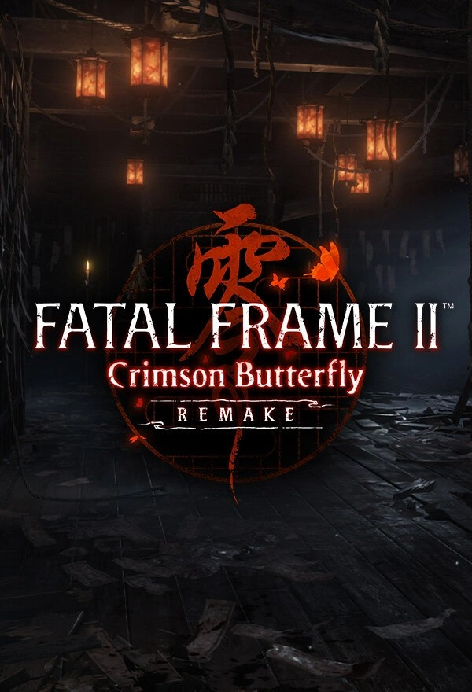
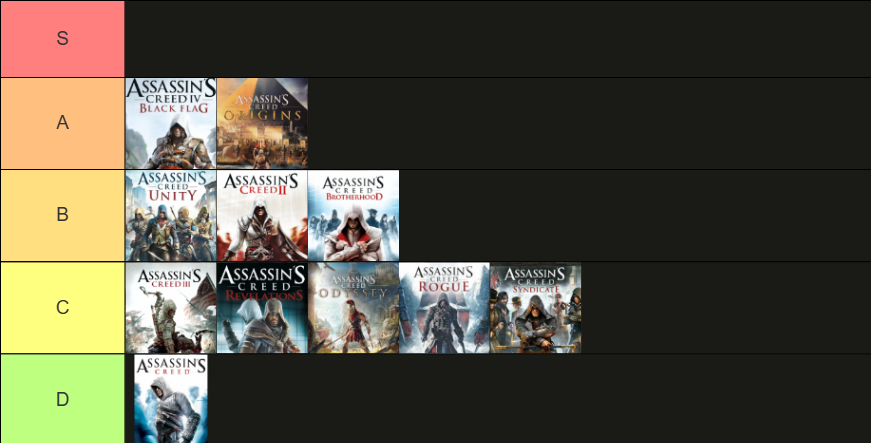

Game Reviews
My thoughts on the games I've played.
Assassin's Creed (2007)
Score: 5/10
The beginning of the Assassin's Creed franchise.
Genre: Action-Adventure
Year: 2007
Platform: PC
Completion Date: 7/29/2026

Fatal Frame II: Crimson Butterfly Remake
Score: 7/10
A unique take on horror games.
Genre: Action-Horror
Year: 2026
Platform: PC
Completion Date: 10/10/2026

Assassin's Creed Marathon

Assassin's Creed Black Flag Resynced — 8/10
A Tier
Black Flag Notes here.
Assassin's Creed Origins — 8/10
A Tier
Origins Notes here.
Assassin's Creed Unity — 7.5/10
B Tier
Unity Notes here.
Assassin's Creed II — 7/10
B Tier
ACII Notes here.
Assassin's Creed Brotherhood — 7/10
B Tier
Brotherhood Notes here.
Assassin's Creed III — 6.5/10
C Tier
**DRAFT**
This one breaks my heart, and perhaps it's the most painful game to revisit. Not painful in the sense that the game is so terrible that it makes you want to cry, but painful in the sense that the game that exists in my memories and nostalgia isn't quite the game that truly exists. Assassin's Creed III was a game I remember very clearly from around the time of its release. I was learning about the American Revolutionary War in middle school, and I'd already played the previous AC games, so I knew I liked the series at the time. I remember seeing the trailer for ACIII and being so excited to get my hands on it and play it that summer. I studied hard and made sure to pass my end of year exams so that my mom would buy me the game. That summer, I spent a large amount of time playing it and doing everything the game allowed me to do, from fully upgrading Connor to unlocking his four pistols and upgrading the homestead.
The game I play today, however, isn't the same game I remember. This is something I've already somewhat acknowledged while doing this AC Marathon and revisiting the older AC games. In my opinion, these games simply haven't aged all that well, as the formula they're built around has been improved upon to such a large degree in other newer titles. ACIII is unfortunately a victim of this, and it really shows when you play it today. Without going into too much detail, the game suffers from a pacing issue. And saying that is really putting it lightly when it comes to just how bad the pacing can be. For example, the game starts you off as Haytham Kenway, the father of Connor Kenway, the protagonist. Haytham's section takes about four hours to complete. Then you play as Connor, but not as an Assassin. Instead, you play as him during his childhood, then as a teenager, and eventually as a young man approaching adulthood. The game takes a good chunk of time to really get going before you're finally able to acquire the Assassin robes and the Hidden Blade. Even then, once you have both, there are still many points in the story where the missions feel like a slog to get through.
The game also happens to have a questionable ending to its modern-day storyline, one that has seemingly left Ubisoft in a rut with the modern-day storylines of subsequent games. It's clear that Ubisoft didn't really know where to take Desmond's story, and we're still dealing with the consequences of this game's modern-day ending even today, nearly 15 years later. To speak positively about the game, ACIII has fun combat and great characters. Not everyone in the fanbase agrees, but I think Connor Kenway is a really great character, and I enjoyed seeing his relationship with Haytham develop throughout the game. I think the timing of the game's release may have worked against it. It was presented as the next generation of AC games at the time, which inevitably left some people disappointed. Not to mention that it came off the back of the Ezio games, in which Ezio is a very charismatic and charming character, only for players to move on to Connor, who is much quieter, more reserved, and more stubborn. I can understand why many people don't think very highly of Connor. All in all, ACIII is an okay game that could have been much better if it weren't held back by its god-awful pacing. It feels as though this is a recurring issue with Ubisoft's AC games: they could be so much better if they weren't held back by that one thing that really plagues them. That said, even though I acknowledge this game isn't the game that exists in memories, there's still a part of me that has some love for this particular AC game, more so than the others. That affection blinds me but it's something I'm willing to cherish in order to appreciate an experience that my younger self once did.Assassin's Creed Revelations — 6/10
C Tier
Revelations Notes here.
Assassin's Creed Odyssey — 6/10
C Tier
**DRAFT**
In Ubisoft fashion, they make a great game, only for the following game to be a downgrade. Simply put, Odyssey is not as good as Origins, and it takes up more of your time as a player for a less rewarding experience. I found myself not enjoying the story and not caring about the characters. After about 10 hours of participating in countless cutscenes, I felt that my enjoyment of the game was waning. Thus, I skipped most cutscenes and only really paid attention to major story points moving forward. The bounty system is perhaps Satan's biggest joke on the player. A joke is perhaps too generous, as jokes are often meant to invoke a smile. There was no smile on my face. Constantly having to pay off bounties or hunt down the bounty hunters quickly became a chore. If, by some cruel twist of fate, you kill an enemy or cultist and a civilian sees you? Be ready for the cavalry. This is much worse when you're in the middle of a mission or clearing a fort that puts you in a scenario where you're surrounded by enemies. I want to be clear that this by no means made the game more difficult or challenging; it was simply annoying and time-consuming.
Which brings me to my next point: the game is a time sink. It feels as though Ubisoft took what Origins did, scratched their chin, and asked, "How can we stretch this game out?" Odyssey is the very result of this thought. Missions require you to complete other missions in order to proceed. However, this isn't always obvious at first, so you end up searching for clues or wandering the map until you realize that one quest is simply gated by another. The cultist system is also a disappointment. The game gives you clues and targets, with the expectation that you will uncover who these people are and then hunt them down. However, just like the quest system, the game will not make a cultist available until you have completed a certain number of other quests. These quests also aren't very engaging or even relate all that much to the cultists themselves. They usually involve you helping a farmer locate his horse and bring it back to him, or something along those lines. To the game's credit, the combat is fun, and the world is absolutely beautiful to look at. If it weren't for the visuals and the combat, I likely would have stopped playing the game or subjected myself to WWII torture just to get through it and rate it.Is it the worst AC game? No. At least when you play it, you can ignore most of its ugly problems because the game boils down to questing, combat, exploration, and so on. Which, in and of itself, is actually fun in this game. This, of course, doesn't absolve it of the crimes I've already mentioned. It simply makes this game a decent experience that could have been a lot better if it hadn't been developed to be an MMO in disguise. Note: I have not played the DLC for this game. By the end of it, I was pretty checked out and really didn't feel like forcing myself to play the DLC for a game that I was already frustrated with. However, in the near future, I'll attempt to play it and share my thoughts on that as well. This review is based solely on my experience with the base game.
Assassin's Creed Rogue — 6/10
C Tier
**DRAFT**
Ubisoft makes a good game, then the next game is a downgrade. *Where have I heard this before?* AC Rogue is a miniature version of AC Black Flag. One would think that because AC Black Flag is one of the best games in the franchise, Rogue would be a good game as well. However, Rogue suffers from what appears to be a lack of polish and care. This is likely due to the game being rushed through development and having been developed in less than a year. The story moves very quickly, and the pacing feels off. The game has an interesting premise: you play as a Templar who was previously an Assassin. However, the story moves far too quickly for this transition to have much of an impact. The characters also don't have much depth because of the rushed nature of the game. This results in the Assassins being almost comically evil while seemingly making the Templars the good guys. The game can also be completed in a relatively short amount of time, roughly 10 hours. It's a shame because it feels as though AC Rogue has the potential to be a great game; it's just painfully obvious that it was rushed, and the player suffers as a result. The best way I can describe it is that it feels like one of those Wii ports of a game originally developed for an Xbox or PlayStation console. It's playable, but it doesn't feel right.
I'd love for Ubisoft to go back and remake this game, giving it a more polished and complete experience by expanding the story. Perhaps they could allow you to play as Shay while he's still an Assassin for longer before he defects. I don't hate AC Rogue; it's just difficult to love it when Black Flag exists and this game feels like a downgrade in comparison. Still, I could see myself playing it again in the future, and I'd recommend it to someone genuinely curious about the story. To make it very clear, I don't have many frustrations with Rogue. It's ranked this low because of the unfortunate comparison to Black Flag and the rushed nature of the game. AC Rogue would be in my top three AC games that I'd want Ubisoft to remake.Assassin's Creed Syndicate — 5.5/10
C Tier
Syndicate Notes here.
Assassin's Creed Valhalla — PENDING
C Tier
Haven't finished yet. Holy cow, 147 GB size? That has to count for a negative right? What happened to optimization man ..